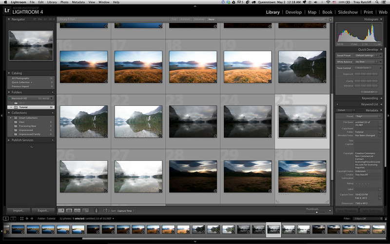
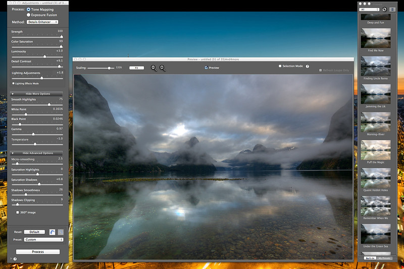
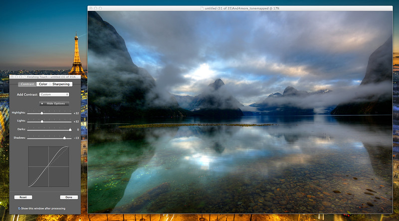
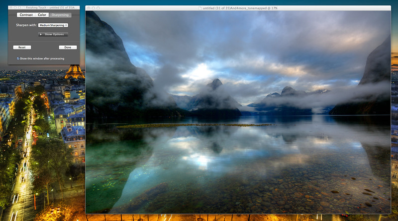

Home | Instructional | Our Products | Contact Us
HDR is an acronym for High Dynamic Range. If you use some special HDR software, you can see all the light in the final photo that you can see when you are standing on the scene. Perhaps you’ve been in a beautiful place and taken a photo and it comes out flat and disappointing. With HDR processing there is no longer a need for that; now the final image can be as truly evocative as it was when you were there. The human eye can see so much more than a single shot that your camera takes by itself. I’ll show you how you can get these files into this software and make the scene as beautiful as it was when you were actually there. I’ll show you how. Don’t worry, it’s easy and super fun!
| STEP 1 – TAKE THE PHOTOS | |
|---|---|
Set up your autobracketing to take three photos at -2, 0, and +2. Some cameras can do more, some less. Do what you can with your camera. For example, on my Nikon D800, it can take 9 photos, stepping by 1, so I could do -4, -3, -2, -1, 0, +1, +2, +3, +4. But that is crazy. I so rarely do that. 95% of the time, I take 5 photos from -2 to +2. There is no discernible advantage in stepping by 1, by the way. I’m just letting you know that most cameras are different, and don’t fret if yours does it differently. |
|

| STEP 2 – COMBINE THE PHOTOS USING PHOTOMATIX PRO | |
|---|---|
After that, you’ll see this delightful dialog. It looks scary, but it is not. You are welcome to experiment with all of these areas, but the only one I usually check is the bottom option. If I did handheld shots without a tripod, then I would also select the first one there to auto-align. |
|

Every photo is unique, and you’ll never get the same results between different kinds of photos. Sunsets, middle of the day, interiors, etc. It’s wild! So, I usually come into Photomatix and just click around on many of my different presets. Some are horrible for one situation but awesome for others! It always changes. In the example above, I started with the preset “Quaint Hobbit Holes” and then modified some sliders from there. Okay, this is where it can get confusing for new people, but I will explain. Do you see at the top how it says “Tone Mapping” and that is selected? And then underneath that it has the “Details Enhancer” selected? Well, depending on what you choose in those top two areas, it dramatically changes the sliders and options beneath! Don’t let that confuse you. After you have fun playing with the sliders, click Process and then you are ready for Finishing Touches. Finishing touches allow you to make a few more final changes in Photomatix before you save the image. |
|---|


Look, let’s just say you are done now. You’re probably very happy with your shot, or at least a bit surprised how fun it was, yes?
That HDR image we just made is pretty cool, right? But let’s not think of that as the final image. Let’s think of that as an “idea” and we want to make more.
Careers • Trademark and Copyright • Privacy Policy • Terms and Conditions
This website represents a fictitious organization and is used for training purposes.